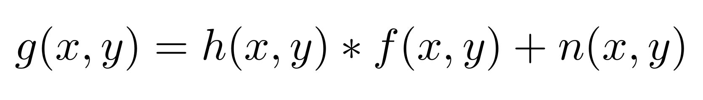
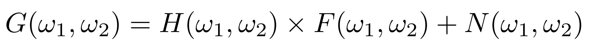
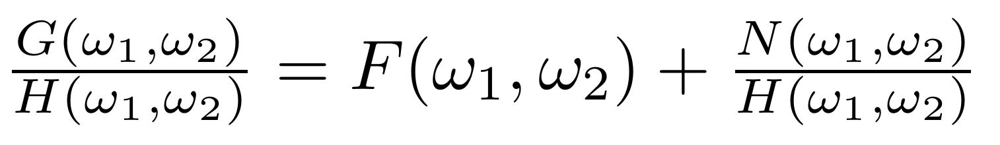
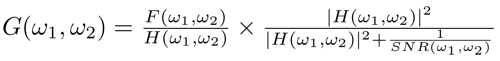
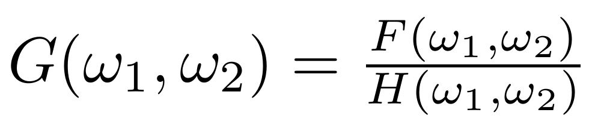

Image deblurring at its basics is taking any image that is not sharply focused and processing it to make it more clear to the viewer. Restoring an image that is "blurred" is one of the most highly publicized parts of image processing. There are several different kinds of image distortions that occur when you take a picture: noise, incorrect focusing, white balance error, exposure error, lens distortion, motion blur, and more. Most people would like their photos to come out sharp and focused, so that viewers can easily see what the photo is about. In our project we will focus mostly on incorrect focusing blur and motion blur. Most of the other distortions are well known and correctly, but the deblurring of images that are focused incorrectly or have camera movement is still very much in development. We will mostly explore incorrect focus and various techniques currently available to deblur images.
We will begin by talking about what causes blur in an image. We will assume that you have some knowledge about linear systems in time and frequency domain, the Discrete Fourier Transform (DFT), and the use of the FFT.
So what causes image blur? The below function outlines the concept of image deblurring:
In this formula f(x,y) represents the unblurred image coming to the camera CCD, h(x,y) represents the blur kernel, and n(x,y) represents the noise added due to the CCD. Notice that the noise is not convolved with the blur kernel, this is because the noise originates from the random motion of electrons in the camera's CCD array, which cannot be avoided and is not blurred. The noise is additive and Gaussian distributed which means that we don't have to worry about its correlation with the proper image itself (though definitely still have to deal with it!).
The blur kernel, also called the point spread function, is caused by improper focusing or by moving the camera while the image is being taken. You can imagine with motion blur, that the pixels in the CCD array have smeared values for what is coming through the lens. There is now one point that has been smeared across multiple pixels. So for each pixel in the CCD we have the sum of multiple pixels in the nearby vicinity. We represent this blur using the point spread function. The advantage of writing the blur in this way is that we can artifically introduce blur by creating our own point spread function (PSF). This allows us to test the effectiveness of different deblurring methods when we know exactly how the image was blurred.
The easiest and most obvious way to fix image blur is to look at this formula in the frequency domain (by doing the DFT):
Then by dividing out by H(w1,w2), we get:
That's great because now we have a solution for f(x,y) after doing the inverse DFT...except for one problem. The noise. Normally the human eye cannot detect the amounts of noise that the camera adds, but if H(w1,w2) has low values in any regions then the noise dominates in this formula and all hope of image recovery is lost.
For our first example we took an image and artificially blurred it to show how deblurring basics work. Note that this image had noise when it was taken from the camera, but we applied the blur kernel (or PSF) to the image and the noise, thus for all intents and purposes there is no noise as described in the above equations. Thus by using fft2 and ifft2 in MATLAB we are able to recover the image exactly.
As you can see this formula works great (as it should) when there is no noise in the system. In the above figure you can see that for both the motion and disk (which behaves like out-of-focus blur) kernels you cannot read the text, but when restored the image looks great. Below we took the disk kernel and showed what happened if we added Gaussian noise to the image AFTER it had been blurred. With added noise, the use of this basic method of image deblurring fails.
To overcome obstacles of signal processing (including noise reduction in image processing), a method called the wavelet transform has been developed. In the case of image processing the wavelet transform is superior to the DFT (Discrete Fourier Transform) and the STFT (Short-Time Fourier Transform). The DFT cannot provide information about how the frequencies vary over time. The STFT solves this issue by taking windows of specified length and shifting them across the signal. This creates multiple DFT's of each of these windows and assumes that the signals in theses intervals are approximately time-invariant. There is still an issue with the STFT as one needs to specify a window of a specific length and use it for the duration of the signal. Signals with a varying range of frequencies can be hard to evaluate because of this. Transients as a result of improper windows can cause aliasing and distort the evaluated signal. Wavelets address the issues of fixed window sizes of the STFT. Wavelets allow variable window sizes while analyzing different frequencies. This is possible by scaling a shifting a certain wavelet function. Small scales are used for high frequencies while large scales are used for low frequencies. The figures below demonstrate the effectiveness of the wavelet transform and its role in noise removal. Noise is unavoidable and almost unpredictable in the collection of images. Moreover, as you have seen noise has adverse effects on image deblurring. In this demonstration, noise was exaggerated by the addition of Gaussian white noise to an out of focus image captured by a camera. It was then shown how this noise negatively affects the deblurring of the image. Using the Wavelet Toolbox in MATLAB, the noise was able to be removed. This allowed for a better deblurred image. The one adverse effect of using the Wavelet Toolbox was that the photo became brighter. This however is because of the toolbox used and not the wavelet transform. We did not dive in-depth into the wavelet transform, but rather wanted to experiment with its capabilities. For more information please see the attached MATLAB code in the References section.
There are several developed methods of image deblurring when you (1) have noise and/or (2) do not know the point spread function. Typically you have both of these things. For the purposes of this section we will be only focusing on images in which we artificially add both noise and blur. This allows us to quantify the abilities of different debluring algorithms without any ambiguity.
The Wiener filter is an important tool in image processing and it essentially performs deconvolution. The formula for the Wiener filter reduces to:
Where G(w1,w2) is the deblurred image, F(w1,w2) is the blurred image, H(w1,w2) is the blur kernel, and SNR(w1,w2) is the singal-to-noise ratio. If there is no noise then the equation reduces to:
Which is exactly what we did in the basics of image deblurring. But there are some cons of using the Wiener filter. In the representations of the images below we used deconvwnr function in MATLAB. It is noted that this function cannot recover the image perfectly, even when the noise is known. In fact, the original image can only be recovered perfectly when there is no noise and the point spread function is known. Noise has a huge impact on the quality of the recovered photo. If the image has Gaussian white noise, the Wiener filter works well when the variance is small, for example 0.00001. Another downfall of the Wiener filter is it does not work well when the point spread function is not known.
One could estimate the point spread function, but even a small change in the point spread function can lead to catastrophic results. It is noted however, if noise parameters are added to an estimated point spread function, than the results can be improved. However, these are still not ideal. In conclusion the Wiener filter is useful when the point spread function is known or can be well estimated, and a good estimation of the noise can be obtained. The issue of noise was dealt with earlier using the wavelet transform.
Blind deconvolution is a deconvolution algorithm that works without specific knowledge of the impulse response function used in the convolution. Blind deconvolution permits the recovery of a blurred image without the need for a specific point spread function. In its simplest form the blind deconvolution algorithm is an iterative function, that takes an initial guess for the point spread function and the blurred image, and returns a deblurred image and a new guess for the point spread function. It can be converted to an iterative algorithm, where each iteration processes the initial image with the new hopefully improved guess for the point spread function. It is important to note that the blind deconvolution algorithm has an optimal number of iterations for deblurring an image, and it is possible to have too many iterations causing the deblurred image to appear worse than if less iterations would have. Thus, the blind deconvolution algorithm must be tuned by giving a good initial guess for the PSF, as well as the correct number of iterations in order to successfully deblur an image. A snippet from Ayers and Dainty's first paper on blind deconvolution is included below. This shows the state diagram used to iteratively compute the deblurred image. We implemented it, but because it uses inverse matrices with small values, the inverse matrices are ill-defined. It requires a lot of fine tuning to get the algorithm to converge.
In our project we used the built in MATLAB function, deconvblind for blind deconvolution to deblur an image with an unknown point spread function. Our goal was to use the blind deconvolution algorithm to deblur an image of handwritten text to the point that the text could be read again.
Based on how the image appeared to be blurred, we defined our PSF as a disk with a radius in the range 3-7 range. We then guessed and checked until we found a value for the radius and number of iterations of the algorithm that returned an image with readable text. In order to demonstrate the effect of the initial guess for the PSF had on the blind deconvolution algorithm we plotted the results of the blind deconvolution algorithm for different PSFs but the same number of iterations. Additionally to demonstrate the effect the number of iterations of the algorithm had on the algorithm we plotted the results of the blind deconvolution algorithm for varying numbers numbers of iterations.
In the end, it was very difficult to find input values that resulted in a good output, though we settled for a disk PSF radus of 5.4 with 18 iterations.
Now that we have covered several methods of image deblurring, how does it fare on an image taken out-of-focus? We have tested the basic DFT method, Wiener filter, and blind deconvolution. The DFT method was so useless we have chosen not to include it here. This is due to the noise produced by the camera.
From the plot above you can see that both the Wiener filter and blind deconvolution do a well enough job to make the text readable after deblurring. For the Wiener filter we used a disk PSF with size 54 and noise variance 0.005. For blind deconvolution we used a disk PSF with size 54 and 18 iterations. We asked several people in our vicinity if they could read the deblurred image, without knowing what it said and they all were able to read the text from both images. It seems that the Wiener filter was able to give us a better result. We believe this is because of the instabilities associated with blind deconvolution make a general implementation very difficult when no information about the image source. Algorithms more sophisticated than MATLAB's would be able to do a better job.
You may be wondering from the previous section how we chose our values for our estimated PSF, noise levels, and number of iterations. It was a process of repitition, guessing, and checking. One long standing issue in image deblurring with these advanced techniques is what the optimal inputs are for an image and how to quantify that at the output. We were not able to find much information about good methods because it is very image dependent.
We had some ideas of possible ways to improve the current algorithms. One idea was to do edge detection on pictures of text to determine whether a giving deblurring output is sufficient without requring human decision making. Another idea was to use multiple deblurring techniques and combine them together with super resolution techniques to create a sharper image. Unfortunately, we did not have time to implement them.
We hope this article helped you understand image deblurring. Now you know how to enhance, Enhance, ENHANCE - well not quite, but now you can call out the TV shows on their antics! We would like to say a big thank you to our Professor Laura Balzano and her two GSIs Matt Kvalheim and Yelin Kim for all their instruction of this semester in EECS 451!
1. Blind Deconvolution - Dilip Krishnan
2. Restoration of Defocused and Blurred Images - Vladimir Yuzhikov
3. Blind Deconvolution - BiAlith Software
4. From Fourier Transform to Wavelet Transform: A Historical Perspective
5. Iterative blind deconvolution method and its applications - Ayers and Dainty
Patrick Leavy, Travis Bowers, Jacob Winick, Colin Nangle